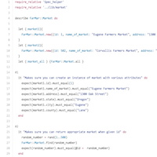

FarMar
We created FarMar as a final Ruby project after five weeks of intensively studying Ruby and Test Driven Development. In this assignment, we used Test Driven Development to create an application to look up farmers markets and their related vendors, products, and sales. We used CSV files as our database.